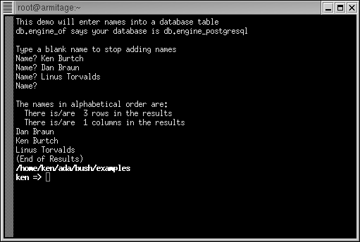

File : database.sp

#!/usr/local/bin/spar
pragma annotate( summary, "database" );
pragma annotate( description, "A simple database demo" );
pragma annotate( author, "Ken O. Burtch" );
pragma license( unrestricted );
pragma restriction( no_external_commands );
procedure database is
database_name : constant string := "ken";
s : string;
begin
-- Connect to database and create demo table
db.connect( database_name );
if not db.is_connected then
put_line( standard_error, "Unable to connect to database!" );
comamnd_line.set_exit_status( 192 );
return;
end if;
db.begin_work;
db.prepare( "create table database_demo ( name varchar(80) )" );
db.execute;
-- Enter data
put_line( "This demo will enter names into a database table" );
put( "db.engine_of says your database is " ) @ (db.engine_of);
new_line;
new_line;
put_line( "Type a blank name to stop adding names" );
loop
put( "Name? " );
s := get_line;
exit when s = "";
db.prepare( "insert into database_demo (name) values ('" & s & "')" );
db.execute;
end loop;
-- Show sorted results
new_line;
put_line( "The names in alphabetical order are:" );
db.prepare( "select name from database_demo order by name" );
db.execute;
put( " There is/are " ) @ (db.tuples) @ ( " rows in the results" );
new_line;
put( " There is/are " ) @ (db.columns) @ ( " columns in the results" );
new_line;
while not db.end_of_query loop
db.fetch;
if db.is_null( 1 ) then
put( "NULL" );
else
put( db.value( 1 ) );
end if;
new_line;
end loop;
put_line( "(End of Results)" );
-- Discard table and disconnect from database
db.rollback_work;
db.disconnect;
end database;
-- VIM editor formatting instructions
-- vim: ft=spar